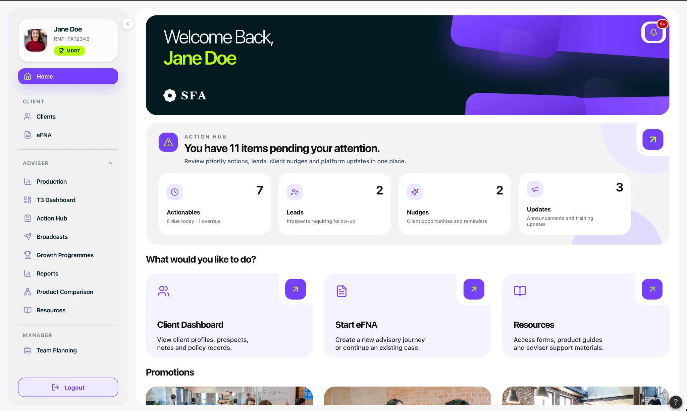
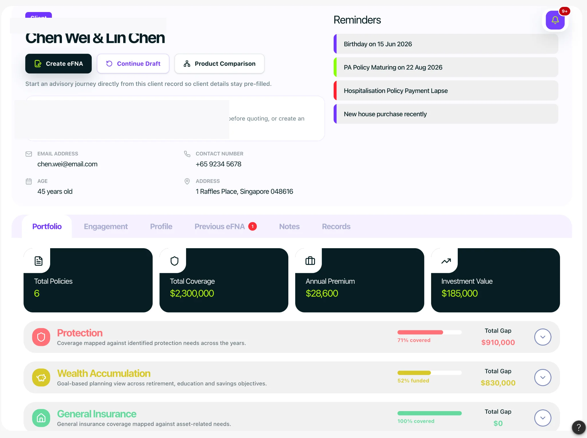
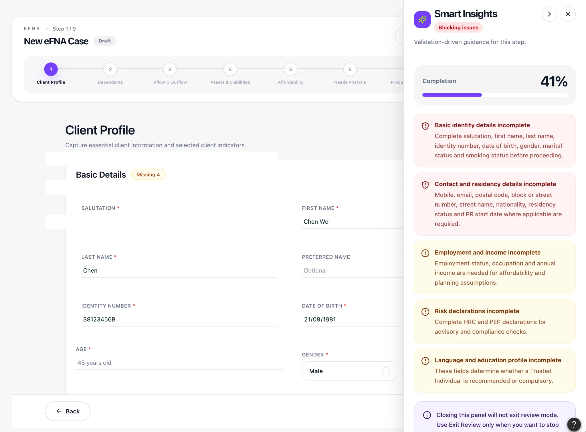
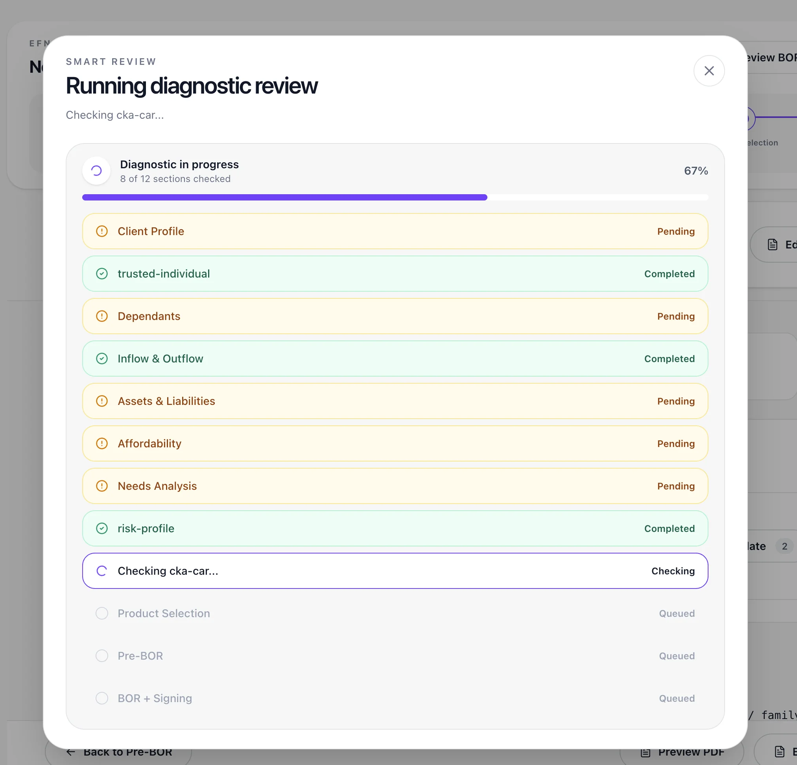
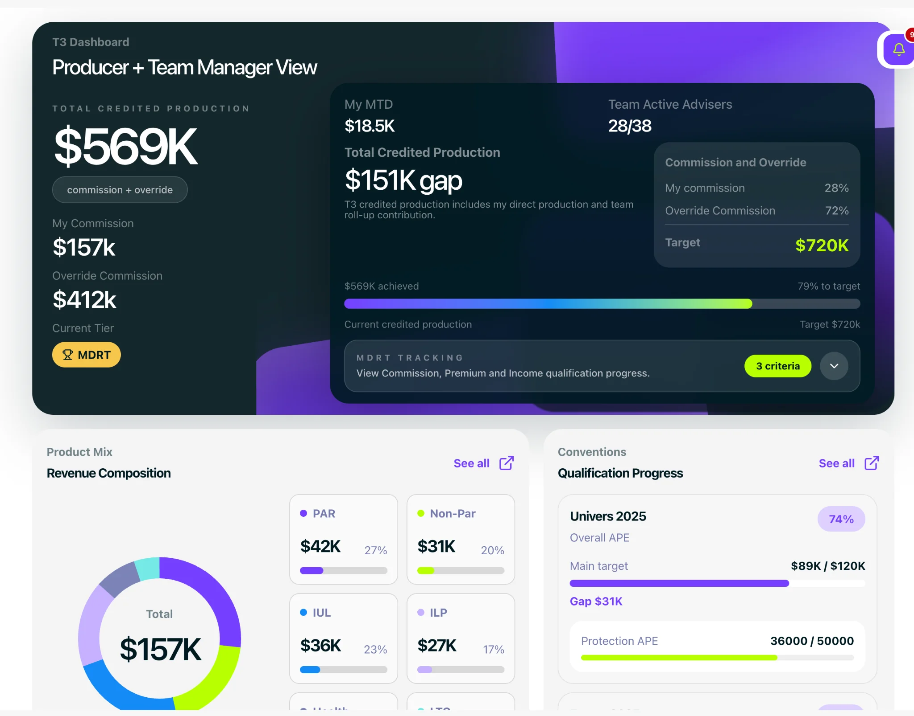
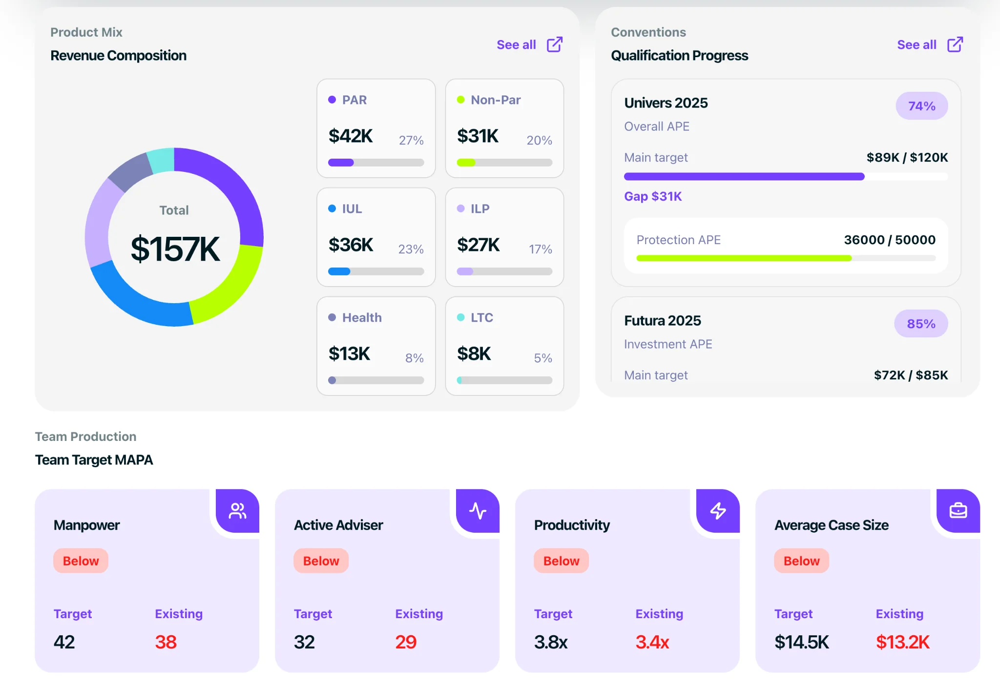

Advice Engine
Advice sequencing, minimum information, emotional friction and hard versus soft decision gates.
ENTERPRISE PRODUCT / CO-CREATION / EXPERIENCE DESIGN
Designing with advisers, not just for them. Reimagining the workflows behind financial advice.

01 / THE CHALLENGE
Advisers move between client discovery, financial needs analysis, product comparisons, follow-ups, servicing and performance management. Designing a useful platform means understanding what people actually do when information is missing, priorities compete or a client wants to skip ahead.
02 / RESEARCH APPROACH
We structured four co-creation sessions around real adviser decisions. Each session asked participants to reconstruct their existing workflows, explain their decision triggers and identify shortcuts or friction before discussing solutions.
Advice sequencing, minimum information, emotional friction and hard versus soft decision gates.
Filtering options, elimination rules, affordability trade-offs and client decision signals.
New clients, active cases, servicing, follow-ups and prioritisation under load.
What advisers and managers check first, what triggers action and which information gets ignored.
These are the research themes documented in the workshop guides, not claims about completed findings.
03 / PRODUCT EXPERIENCE
The prototype brings the adviser’s working context together: client records, reminders, protection and wealth information, and entry points into financial needs analysis and product comparison.

04 / GUIDED ADVICE
The eFNA prototype shows a staged advisory journey and a Smart Insights panel that surfaces incomplete information and issues to review. The companion diagnostic view makes review progress and pending sections visible. These are proposed interaction patterns, not evidence of validated effectiveness.


05 / MULTIPLE ROLES
Advisers and team managers need different views of their work. The prototype explores production, qualification progress, product mix and team performance, with emphasis on progress against targets and potential areas requiring attention.


06 / IN PROGRESS
Propel is in development, with launch planned for 2027. The next step for this case study is to connect confirmed workshop findings to specific design decisions and testing outcomes. No adoption, conversion or time-saving claims are made before validation.
Screens shown are prototype work. Before publishing externally, verify permissions and ensure all client information and internal business metrics are approved or replaced with synthetic data.